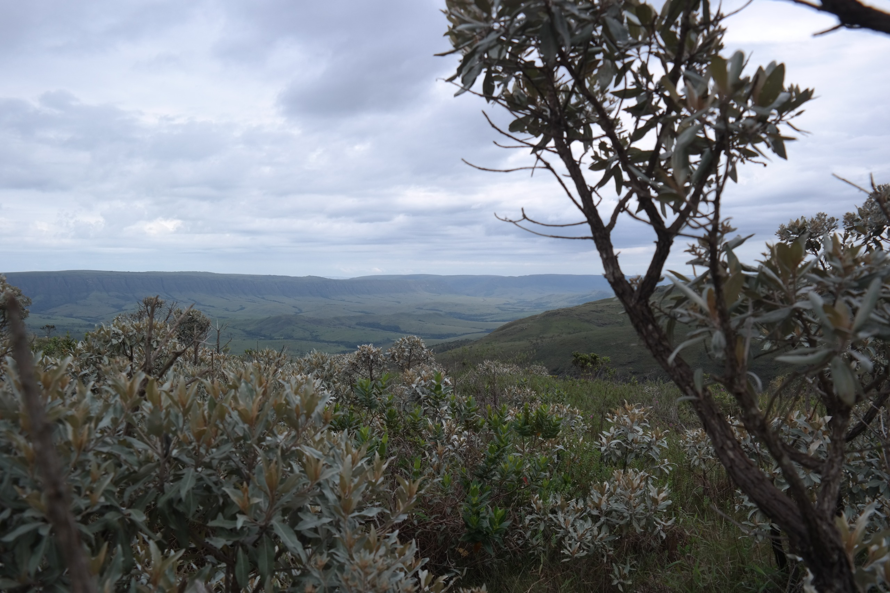
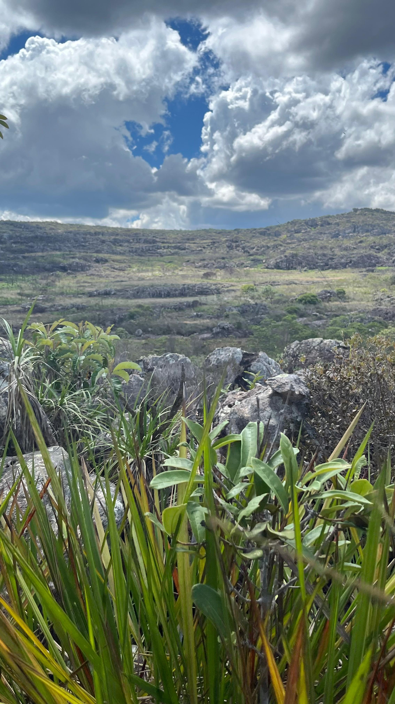
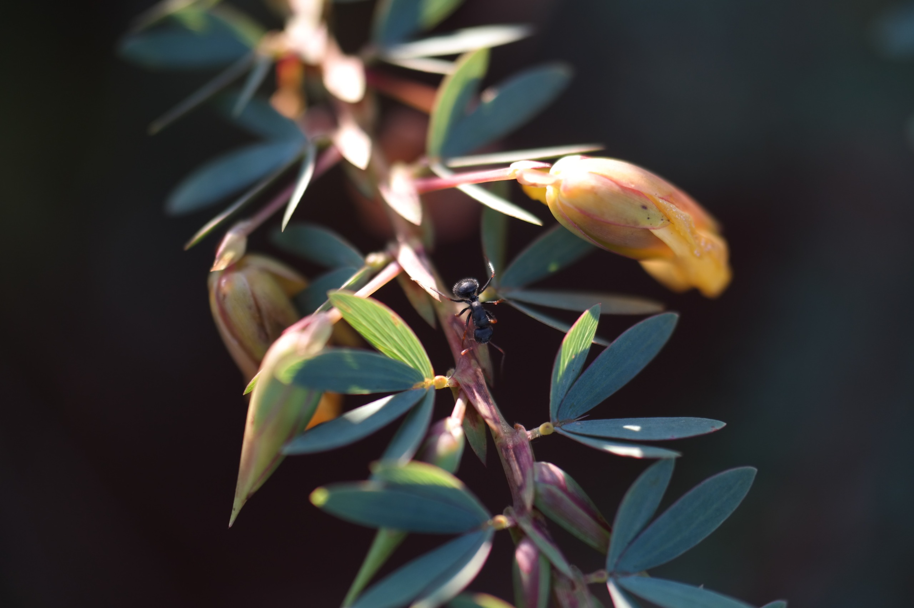

Nathália Fernandes Canassa
Mestrado pelo Programa de Pós-Graduação em Ciências Biológicas (Botânica) — Universidade Estadual Paulista (UNESP), Botucatu
- Interações planta-animal
- Ecologia de comunidades
- Distribuição de espécies
- Cerrado
Sobre
Graduada em Ciências Biológicas pela Universidade Federal da Paraíba (UFPB, 2014), onde desenvolveu pesquisa sobre mamíferos de médio e grande porte na Serra de Santa Catarina — PB, trabalho que resultou em publicação científica e um capítulo de livro.
Seu projeto de mestrado no LIPA investigou a influência de fatores abióticos sobre o padrão de distribuição de plantas lenhosas no cerrado sensu stricto. O trabalho integrou análises multivariadas e abordagens de ecologia de comunidades para compreender como variáveis ambientais estruturam a composição florística neste bioma.
Trajetória no LIPA
Clique em uma etapa para ver detalhes.
2017–2019 · UNESP Botucatu
- Orientador:
- Anselmo Nogueira
- Financiamento:
- CAPES
- Título:
- Influência de fatores abióticos no padrão de distribuição de plantas lenhosas no cerrado sensu stricto



